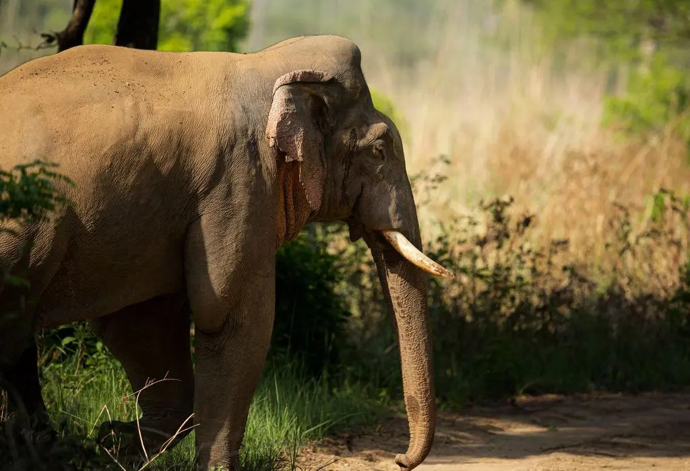
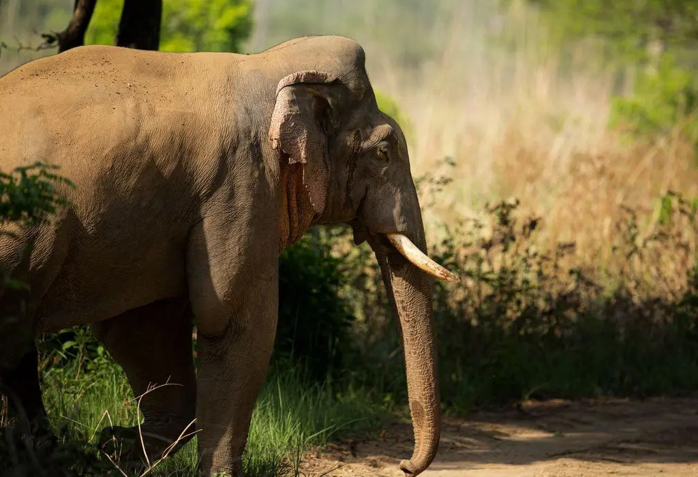

General Information
This wildlife sanctuary with an area of 207 Sq. Km. lies between 80°25' and 80°57' E longitudes and 23°57' and 24°20' N latitudes in the south-west corner of Chatra District and is surrounded by the Amanat river in the south, Chako nala in the west and Lilajan river in the north-west. The forests here are miscellaneous, of Dry Mixed Deciduous type with Bamboo and patches of pure Asan crops.
Other tree species being Khair, Siris, Bauhinia, Bel, Palas, Dhow etc. Besides a variety of birds, the sanctuary is the home for a complete range of mammals including Tiger, Leopard, Sambhar, Cheetal, Barking Deer, Wild Boar, Nilgai etc.
History
Lawalong Wildlife Sanctuary was earlier under the control of the Raja of Ramgarh and other landlords in the area. The government took charge in 1924 and in 1947 it became a private protected forest. The ownership vested with the Government of Bihar in 1953. In earlier days, the presence of wildlife in high numbers in these forests attracted hunters from all over the country. One of the owners of this area, the Tikait of Kunda Estate used to organise “shikar” from time to time, in a big way. Subsequently, hunting was completely banned under the Wildlife Protection Act 1972. There are 64 villages in the sanctuary area and the people of these villages have certain rights and privileges, as for example grazing cattle and collecting firewood.
Geography
Cities, towns and locations in Chatra district in North Chotanagpur Division
M: municipality, CT: census town, R: rural/ urban centre, H: historical/ religious centre, P: power plant, T: tourist centre
Abbreviation used - TPS: thermal power station
Owing to space constraints in the small map, the actual locations in a larger map may vary slightly
Location
Lawalong Wildlife Sanctuary is located around 24.160652°N 84.657478°E. It is spread over an area of 207 square kilometres (80 sq mi).The sanctuary is surrounded by the Amanat River in the south, the Chako River in the west and the Lilajan River in the north-east.[1][
Lawalong Wildlife Sanctuary is about 35 km from Chatra. The Gaya-Ranchi state highway passes near the Lawalong sanctuary on its eastern side. There is a road connecting the Gaya-Ranchi state highway and leads to Lawalong village and passes through the sanctuary area. The Hazaribagh-Simaria-Bagra Mor P.W.D. Road leads to Lawalong, where the Beat office of Lawalong Beat of Wild Life Sanctuary is situated. The buses for Lawalong and Kunda ply on these roads and halts at important places like Lutidih, Bagra Mor etc. The nearest large railway station is at Daltonganj, 50 km away.
Wildlife
The main mammalian species in the sanctuary are: Rhesus macaque (Hindi: bandar), common langur, Indian elephant, sambhar, leopard, spotted deer (Hindi: cheetal), barking deer (Hindi: kotra), sloth bear (Hindi: bhalu), jungle cat, common mongoose (Hindi:newla), and the dhole (Hindi: kola).
Birds: common pea fowl, patridges, quails, hornbills and vultures


 
